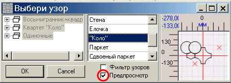
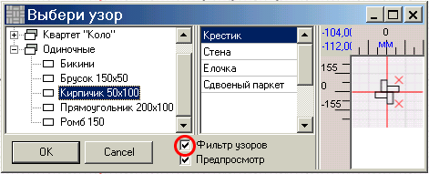
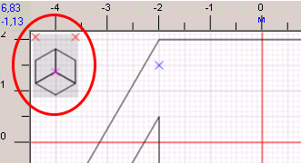
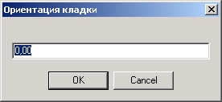

Открывается окно со списком всех узоров, составленых с использованием всех видов плитки. Если поставить флажок "Предпросмотр", то можно увидеть узор, не открывая его:

Если в окне со списком узоров поставить флажок "Фильтр узоров", то узоры будут доступны после выбора плитки и только те, которые составлены с использованием этой плитки.

После подтверждения выбора узора кнопкой "ОК", в левом верхнем углу окна проекта будет нарисован узор. Это сделано исключительно для того, чтобы помнить, какой именно узор выбран.

|
Примечание. Если после того как был выбран узор, вы исправляли в соответствующих редакторах его или плитку, из которой узор составлен, нужно заново выбрать узор в проекте.
Иначе изменения не будут внесены в проект. |
Плитку не обязательно укладывать по координатным осям, иногда это хочется сделать по какой-то выбранной вами линии или вдоль одной из сторон участка. Для этого задайте ориентацию кладки - угол отклонения узора от горизонтальной оси против часовой стрелки. Кнопка .

|
Совет. Не подбирайте угол, выберите линию нужного направления или временно проведите такую. Угол посмотрите в свойствах линии. Чтобы открыть свойства линии используйте кнопку |
Теперь можно переходить к следующему этапу - заполнение плиткой.